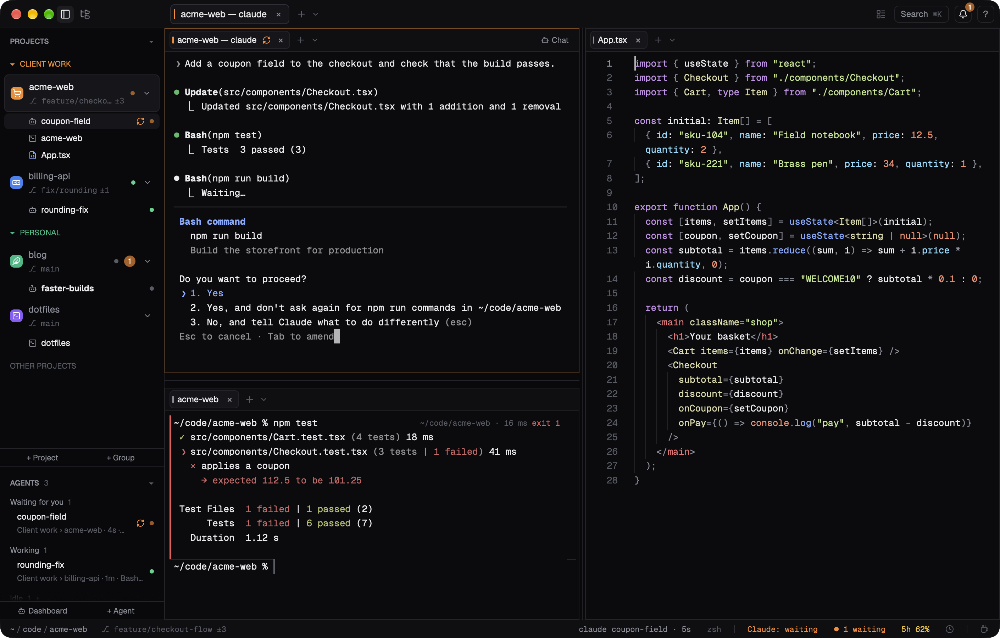
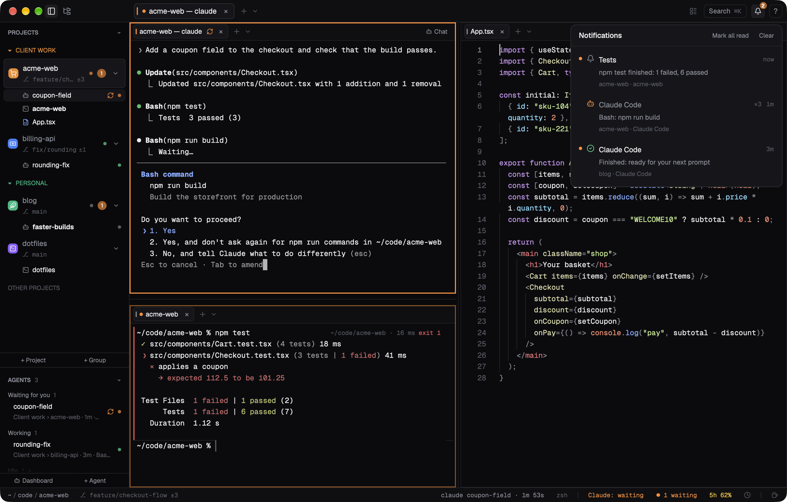
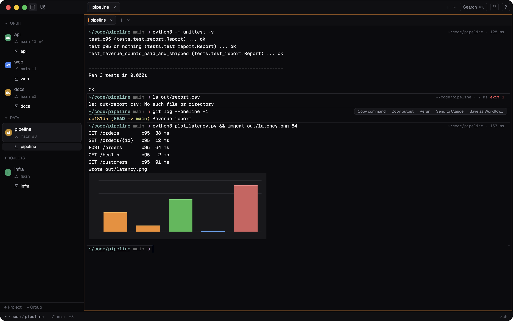
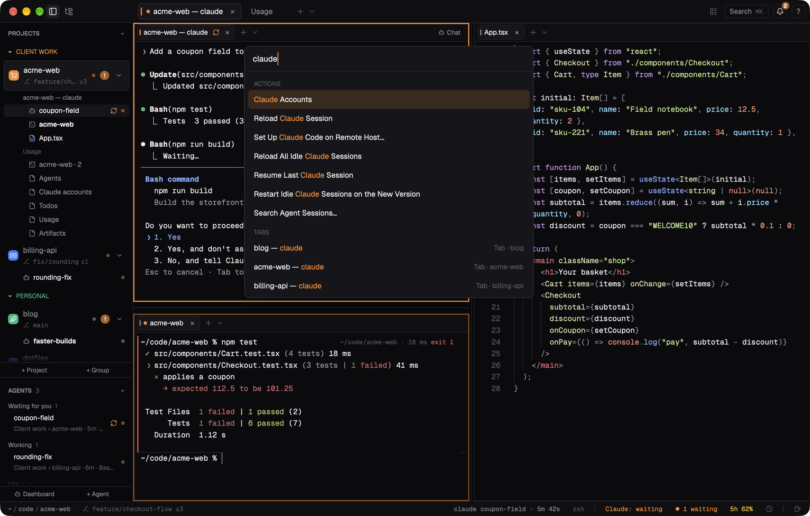
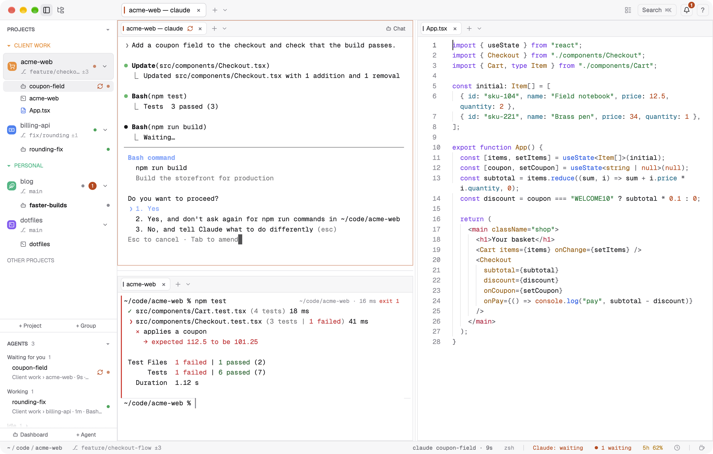

Flashex
A fast, light terminal built for AI coding agents, on macOS and Windows (Linux in beta): every agent's state at a glance, a chat over its terminal, your phone as a remote, an editor, Source Control and a browser panel, in one native app.

What Flashex is
- A terminal built for agents. Run Claude Code, Codex, Gemini CLI, pi and other agents in as many terminals as you like. Their hooks tell Flashex when an agent is running, waiting for you or done; the sidebar shows each agent's state as a dot, and notifications say what it said and point at the exact terminal.
- A chat over an agent's terminal. Chat | Terminal in a pane's tab strip shows the conversation as a chat, with its pictures and videos and its questions as cards; Send a Message Later schedules a prompt.
- Your agents on your phone. Remote Access pairs a phone over Tailscale: follow and answer every agent, get notified, switch Claude accounts, read files and diffs.
- Claude accounts that switch before a limit. Claude Accounts keeps each login with its 5-hour and weekly limits and makes another one the login in a click, or by itself when the one in use is nearly spent.
- Agent teams and chains. A lead and its helpers, each in a terminal of its own, messaging each other through Flashex: Agent teams and chains.
- Todos, Sync and Artifacts. A todo list per project that you and your agents edit, the same on every computer, and every page Claude published with a local copy.
- Terminals that outlive the app. A small helper keeps your shells, agents and jobs running while Flashex restarts for an update, after a crash, and by default after you quit. They come back with what they showed.
- Command blocks. Every command is a block with its folder, duration and exit code: jump between them, fold, copy, rerun, send to an agent or save as a workflow.
- A real editor. Tree-sitter highlighting, multiple cursors, and go to definition, references, hover, completion, rename and diagnostics from the language servers you already have.
- Source Control, a browser panel and dashboards. Stage, commit, pull and push; open local pages next to your code; see your agents, your usage and limits and your computer at a glance.
- A Vault and a
flashexcommand. Secrets in an encrypted file that programs get only after you allow it, and a command (and MCP server) with which scripts and agents drive the app. - Its own terminal core.
flashex-vtis written in Rust for Flashex, with inline images (kitty graphics, sixel, iTerm2) and the kitty keyboard protocol.
Flashex is free to use, for personal and commercial work. It runs on Apple Silicon Macs with macOS 13 or later and on Windows 10 (1809) and 11, x86_64 and ARM64; a Linux build is in beta. It has no telemetry and no accounts: what stays on your computer.
Start here
macOS (dmg or Homebrew), Windows, Linux; the first open, updates.
A project, terminals, splits and Claude Code in a few minutes.
Hooks, the chat, the phone, Claude accounts, teams, notifications.
Splits, pane tabs, dragging, sizes and templates.
Agents, Usage, System, Todos, Sync and Artifacts.
Every setting in config.toml.
The flashex command for scripts and agents.
A short tour




Getting help
Check Troubleshooting & FAQ first. Bugs and ideas are welcome in Issues; a clear report with steps to reproduce it is worth a lot. The best way to support Flashex costs nothing: star the repository and tell a friend who lives in the terminal.